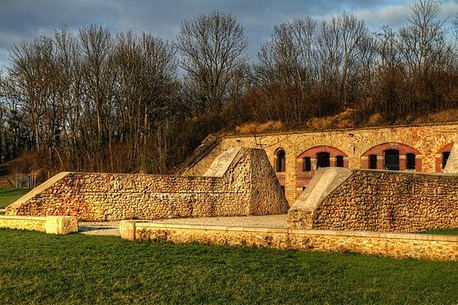
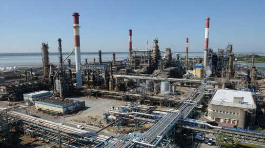
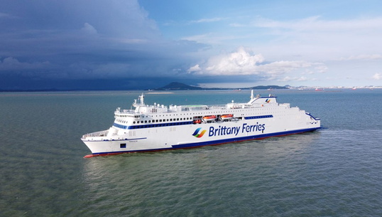
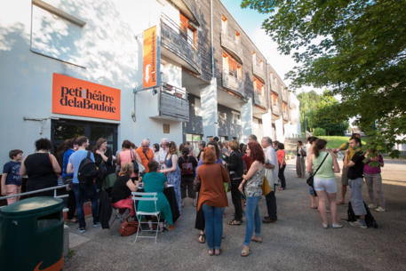
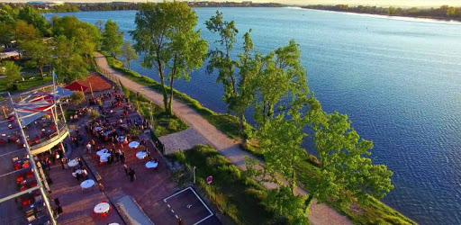

<!--Div principale-->
<div class="p-5 mb-4 bg-light rounded-3">
    <div class="container-fluid py-5">
        <!--Liste des projets-->
        <div class="row row-cols-1 row-cols-md-2 g-4">
            <div class="visible col">
                <div class="card card border-secondary mb-3">
                    
                    <div class="card-body text-secondary">
                        <h5 class="card-title">Le projet Chateau</h5>
                        <p class="card-text">Projet issu de mes experiences professionnelles antérieures à la
                            formation.</p>
                        <a class="btn btn-success" id="chateau" onclick="displayNOK(this.id)">Aller au projet</a>
                    </div>
                    <div class="card-footer">
                        <small class="text-muted">Compétences :</small>
                    </div>
                </div>
            </div>
            <div class="visible col">
                <div class="card card border-secondary mb-3">
                    
                    <div class="card-body text-secondary">
                        <h5 class="card-title">Le projet pétrole</h5>
                        <p class="card-text">Projet issu de mes experiences vecues durant la formation.</p>
                        <a class="btn btn-success" id="petrole" onclick="displayNOK(this.id)">Aller au projet</a>
                    </div>
                    <div class="card-footer">
                        <small class="text-muted">Compétences :</small>
                    </div>
                </div>
            </div>
            <div class="visible col">
                <div class="card card border-secondary mb-3">
                    
                    <div class="card-body text-secondary">
                        <h5 class="card-title">Le projet Bateau</h5>
                        <p class="card-text">Projet issu de mes experiences vecues durant la formation.</p>
                        <a class="btn btn-success" id="bateau" onclick="displayNOK(this.id)">Aller au projet</a>
                    </div>
                    <div class="card-footer">
                        <small class="text-muted">Compétences :</small>
                    </div>
                </div>
            </div>
            <div class="visible col">
                <div class="card card border-secondary mb-3">
                    
                    <div class="card-body text-secondary">
                        <h5 class="card-title">Le projet Festival</h5>
                        <p class="card-text">Projet issu de mes experiences professionnelles antérieures à la
                            formation.</p>
                        <a class="btn btn-success" id="festival" onclick="displayNOK(this.id)">Aller au projet</a>
                    </div>
                    <div class="card-footer">
                        <small class="text-muted">Compétences :</small>
                    </div>
                </div>
            </div>
            <div class="visible col">
                <div class="card card border-secondary mb-3">
                    
                    <div class="card-body text-secondary">
                        <h5 class="card-title">Le projet Base nautique</h5>
                        <p class="card-text">Réalisation en cours de formation permettant de réaliser tout le processus
                            d'un site web</p>
                        <a class="btn btn-success" id="base" onclick="displayNOK(this.id)">Aller au projet</a>
                    </div>
                    <div class="card-footer">
                        <small class="text-muted">Compétences :</small>
                    </div>
                </div>
            </div>
            <div class="visible col">
                <div class="card card border-secondary mb-3">
                    
                    <div class="card-body text-secondary">
                        <h5 class="card-title">Le projet Telephone</h5>
                        <p class="card-text">Projet professionnel</p>
                        <a class="btn btn-success" id="telephone" onclick="displayNOK(this.id)">Aller au projet</a>
                    </div>
                    <div class="card-footer">
                        <small class="text-muted">Compétences :</small>
                    </div>
                </div>
            </div>
            <div class="visible col">
                <div class="card card border-secondary mb-3">
                    
                    <div class="card-body text-secondary">
                        <h5 class="card-title">Le projet Chimie</h5>
                        <p class="card-text">Projet professionnel</p>
                        <a class="btn btn-success" id="chimie" onclick="displayNOK(this.id)">Aller au projet</a>
                    </div>
                    <div class="card-footer">
                        <small class="text-muted">Compétences :</small>
                    </div>
                </div>
            </div>
        </div>

        <!--Détails des projets-->
        <div class="row">
            <div class="invisible card" id="chateauDetails">
                <div class="card-header">
                    Projet Château
                </div>
                <div class="card-body">
                    <h5 class="card-title">La réussite dans la diversité. En avant l'Histoire.</h5>
                    <div class="card-text">
                        <h1>Le contexte</h1>
                        <p>Le projet Chateau s'inscrit dans le cadre d'une activité de bénévolat.</p>
                        <p>L'association Concordia (<a href="https://www.concordia.fr/">ici</a>) organise des échanges
                            internationaux, autour de projets culturels, visant a promouvoir l'entre aide et la
                            tolérance
                            entre les peuples.</p>
                        <p>Le projet, pour l'année 2016 consistait à nettoyer et restaurer deux murs parallèles dans
                            l'ancienne enceinte du fort de Chelles ainsi qu'a faire la promotion du patrimoine culturel
                            ainsi préservé et de l'action de Concordia dans le cadre de ce chantier. Cette action était
                            réalisée en partenariat avec la mairie de Chelles, notamment chargée de l'approvisionnement
                            logistique et matériel. Par ailleurs, la mairie fournissait un lieu de résidence ainsi qu'un
                            mode de transport pour la durée du séjour.</p>
                        <h1>L'équipe projet</h1>
                        <ul>
                            <li>1 responsable technique en charge de la réalisation de la restauration</li>
                            <li>1 animateur vie de groupe, en charge de la vie du groupe, des relations avec la
                                collectivité,
                                de la médiation et du budget.
                            </li>
                            <li>12 bénévoles internationaux (3 espagnoles, 2 polonaises, 2 turques, 2 coréennes, 1
                                russes
                                et 2 françaises)
                            </li>
                        </ul>
                        <br>
                        <h1>Le projet</h1>
                        <p>En tant qu'animateur vie de groupe j'étais chargé de l'encadrement des volontaires
                            internationaux,
                            de la gestion du budget, de la mise en place d'animations et de temps de réflexion autour du
                            patrimoine, médiation auprès du public local (travail sur la mémoire et le patrimoine,
                            rencontre avec les habitants), de la représentation associative (travail avec le bureau
                            d'information jeunesse, les élus locaux, etc.).</p>
                        <p>Dans les faits, j'étais chargé d'orchestrer la vie des bénévoles sur le camp et d'articuler
                            les temps de travail et ceux de loisirs, dans le cadre des engagements projet et de
                            l'enveloppe
                            budgétaire allouée au séjour. J'étais par ailleurs , l'interlocuteur tant de l'association
                            que des collectivités conjointement partie prenante sur le chantier international.</p>
                        <br>
                        <h1>Compétences</h1>
                        <p>Gestion de projet, Gestion d'équipe, gestion financière, communication.</p>
                    </div>
                </div>
            </div>

            <div class="invisible card" id="bateauDetails">
                <div class="card-header">
                    Projet Bateau
                </div>
                <div class="card-body">
                    <h5 class="card-title">Maintenance au long court</h5>
                    <div class="card-text">
                        <h1>Le contexte</h1>
                        <p>Le projet Bateau s'inscrit dans le cadre d'un contrat de TMA en régis, sur le logiciel
                            Maximo, pour une entreprise de transport maritime de fret et de personnes.</p>
                        <p>Plus précisément, il s'agit d'une TMA (Tiers Maintenance Applicative) Maximo Corrective et
                            évolutive. Sur la base d'un ETP, nous nous engageons à répondre sans limites de délais,
                            mais en proportion de l'urgence, aux demandes de correction de bugs et d'évolutions
                            spécifiques du client.</p>
                        <p>Le projet s'inscrit dans un processus de migration/monté de version et de développement de
                            la flotte de serveur, afin d'équiper chaque bateau de notre client.</p>
                        <h1>L'équipe projet</h1>
                        <p>Dans un premier temps :</p>
                        <ul>
                            <li>La MOA chargé des spécifications du besoin et des tests d'intégrations</li>
                            <li>La MOE chargé de la catégorisation des tickets et de la répartition des tickets et
                                d'une partie des développements
                            </li>
                            <li>Un chef de projet client</li>
                            <li>Un développeur prestataire (moi)</li>
                        </ul>
                        <p>Dans un second temps :</p>
                        <ul>
                            <li>Coté client :
                                <ul>
                                    <li>La MOA</li>
                                    <li>Un chef de projet</li>
                                </ul>
                            </li>
                            <li>Coté prestataire :
                                <ul>
                                    <li>Un chef de projet technique(moi)</li>
                                    <li>Une équipe de deux développeurs</li>
                                </ul>
                            </li>
                        </ul>
                        <br>
                        <h1>Le projet</h1>
                        <p>En tant que développeur junior, j'ai été en charge des bugs et évolutions mineurs tels que
                            la modification d'interface, la correction de code, l'extension de processus et leurs
                            éventuelles adaptations.</p>
                        <p>En tant que développeur plus confirmé, j'ai continué les corrections et les évolutions,
                            notamment au travers de la conception et de la réalisation de nouvelles applications et le
                            déploiement des développements (interne et externe) en test/intégration et production.</p>
                        <p>Enfin, en tant CP technique, j'ai eu la responsabilité de former et superviser une équipe de
                            deux développeurs juniors (chiffrage, test, livraisons) et de gérer les relations avec notre
                            client (participation au copil hebdomadaires, suivi de la charge).</p>
                        <br>
                    </div>
                </div>
                <div class="card-footer">
                    <small class="text-muted">Gestion de projet, Gestion d'équipe, conception de base de données</small>
                </div>
            </div>

            <div class="invisible card" id="festivalDetails">
                <div class="card-header">
                    Projet Festival
                </div>
                <div class="card-body">
                    <h5 class="card-title">Gerer un projet culturel de spectacle vivant, en sortant d'études.</h5>
                    <div class="card-text">
                        <h1>Le contexte</h1>
                        <p>Le projet Festival s'inscrit dans le cadre d'un contrat de service civique comme première
                            expérience en tant que chargé de projet culturel.</p>
                        <p>Tous les ans, le CROUS de Bourgogne Franche Comté organise un festival d'arts vivant, le
                            Festival de la Bouloie.</p>
                        <p>Ce festival d'une durée moyenne d'une semaine s'adresse principalement aux étudiants sous la
                            responsabilité des Crous.</p>
                        <h1>L'équipe projet</h1>
                        <ul>
                            <li>Emilie Camelin, ma tutrice</li>
                            <li>Une personne en charge du traitement administratif</li>
                            <li>Une personne en charge de la communication interne</li>
                            <li>6 compagnies de spectacle vivants</li>
                            <li>2 ingénieurs son et lumière + 3 ingénieurs lumières (stagiaires)</li>
                            <li>1 photographe</li>
                            <li>1 équipes de tournages</li>
                        </ul>
                        <h1>Le projet</h1>
                        <p>En tant que Chargé de l'organisation et du développement du Festival de la Bouloie mon
                            objectif était de développé la portée et la diversité de la programmation du festival de la
                            Bouloie, dans le cadre de la refonte des régions (fusion bourgogne et franche comté) et de
                            la concurrence d'un festival similaire en Bourgogne.
                            <br>
                            J'étais chargé de diversifier la
                            programmation, jusqu'alors centré sur le théâtre et la dance et d'ouvrir l'appel à
                            candidature sur toute la "grande région".</p>
                        <p>Dans les actes, j'ai rédigé et promus l'appel à projet pour les artistes, j'ai encadré
                            les bénévoles, suivi du budget (suivi des dépenses et bilan comptable de l'évènement). Je me
                            suis par ailleurs chargé de la mise en place des spectacles (planning, programmation,
                            staffing des équipes techniques), de la diffusion de la campagne de communication (campagne
                            d'affichage, interview radio, etc...). J'ai aussi participé au jury de sélection des
                            compagnies de spectacle vivant, rédigé l'appel à projet pour le graphiste et conduits
                            les différents entretient.</p>
                        <p>Le festival à durée 5 jours, nous avons produit 6 spectacles (dont deux d'art
                            circassien) sur une douzaine de candidatures et maintenu la fréquentation du festival.</p>
                    </div>
                </div>
                <div class="card-footer">
                    <small class="text-muted">Compétences : Gestion de projet, Gestion d'équipe, gestion financière,
                        communication</small>
                </div>
            </div>

            <div class="invisible card" id="petroleDetails">
                <div class="card-header">
                    Projet Bateau
                </div>
                <div class="card-body">
                    <h5 class="card-title">Un projet au long cours</h5>
                    <div class="card-text">
                        <h1>Le contexte</h1>
                        <p>Le projet Pétrole est une Tiere Maintenance Applicative (TMA) Corrective-Evolutive sur le
                            logiciel de GMAO (Gestion et Maintenance Assisté par Ordinateur) Maximo (fourni par
                            IBM).</p>

                        <h1>L'équipe projet</h1>
                        <ul>
                            <li>1 responsable MOE</li>
                            <li>1 responsable MOA</li>
                            <li>1 CP SQLI</li>
                            <li>2 développeurs en 2/5 et 3/5 pour un ETP</li>
                        </ul>
                        <h1>Le projet</h1>
                        <p>J'ai commencé à travailler sur ce projet dès mon stage de fin de reconversion (en 2019) en
                            tant que développeur.</p>
                        <p>Ce projet est multi-technique. Maximo repose sur du Java J2EE sur un serveur applicatif
                            Windows et une base de données Oracle 12c. Par ailleurs, nous avons développé des programmes
                            annexes en Angular sur une plateforme Linux. Dans le cadre de ce projet, nous développons
                            également des Excels connectés en VBA.</p>
                        <p>J'ai commencé sur ce projet en effectuant une auto-formation sur le VBA afin de pouvoir
                            réaliser des corrections sur les Excels avant de suivre une formation interne sur Maximo
                            (fonctionnel et développement).</p>
                        <p>A l'heure actuelle, je suis le développeur principal sur ce projet (3/5 du temps). J'effectue
                            aussi bien des développements spécifiques, de la configuration fonctionnelle que de
                            l'assistance techinque.</p>
                        <p>Par exemple, récemment, j'ai dû développer un module spécifique (conception base +
                            réalisation graphique et développement) afin de permettre de gérer un processus de
                            maintenance, non prévu dans Maximo. A partir des cahiers des charges fonctionnel et
                            technique, j'ai dans un premier temps réalisé le schéma des nouvelles tables afin de
                            compléter les spécifications techniques, puis je les ai créées à l'aide de l'outil de
                            gestion de base de données. J'ai, dans un second temps, réalisé les écrans de ce nouveau
                            module toujours dans Maximo avec l'outil de Conception d'application. Enfin, j'ai dû mettre
                            au point les différentes méthodes en Java qui permettent à ce nouveau module de fonctionner
                            avec les processus existants. Une fois testé en interne, nous avons livré une premiere
                            version qui a été commentée par le client. Suite à ses retour, j'ai créé les tickets pour
                            chaque modifications avant de les réaliser.</p>
                        <p>Un autre exemple de notre fonction pour ce client fut le suivant. Dans le cadre d'un audit
                            matériel, ils ont du effectuer des manipulations sur l'environnement Maximo et ont fait
                            appel à nous. Nous les avons assisté en leur fournissant les procédures nécessaires puis en
                            les accompagnant en visio lors de leur exécution.</p>
                    </div>
                </div>
                <div class="card-footer">
                    <small class="text-muted">Compétences : Développement, Relation Client, Communication.</small>
                </div>
            </div>

            <div class="invisible card" id="baseDetails">
                <div class="card-header">
                    Projet Base Nautique
                </div>
                <div class="card-body">
                    <h5 class="card-title">Renouveau à la base nautique de Meyzieu</h5>
                    <div class="card-text">
                        <h1>Le contexte</h1>
                        <p>Dans le cadre de la formation Mastère EIL (deuxième année), ma classe a participé à un module
                            sur la conception graphique d'un site web.</p>
                        <p>Le projet proposé consistait en la réalisation d'un site web pour la base nautique de
                            Meyzieu. Après avoir créer une maquette puis un prototype du site, nous devions dans un
                            second temps réaliser le site (seul ou en groupe).</p>
                        <h1>L'équipe projet</h1>
                        <p>Pour la réalisation de la maquette, nous avons travaillé en classe entière
                            (roadmap et zoning) puis individuellement.</p>
                        <p>Pour la réalisation du site, j'ai travaillé avec un autre élève de ma promotion.</p>
                        <h1>Le projet</h1>
                        <p>Dans un premier temps, nous avons étudié le site actuel de la base nautique de Meyzieux afin
                            d'en extraire des contenus et déterminer ce que notre site allait devoir présenter.
                            Nous avons ensuite fait une veille concurrentielle et consulté d'autres sites en rapport
                            avec les activités nautiques. Cette seconde action a pour but de déterminer ce qui existe
                            déjà et obtenir des idées sur notre propre réalisation. Avec cette étape, je cherchais à
                            répondre à la question: " Existe-t-il des constantes sur ce type de site ?". Après ces
                            étapes préliminaires, nous avons réalisé un exemple de zoning pour le site en
                            construction.</p>
                        <p>Dans un deuxième temps, j'ai réalisé une maquette sur le logiciel Adobe XD. J'ai ainsi
                            schématisé mes différentes pages, réalisé mes icônes et mes logos. Ensuite, j'ai animé
                            l'ensemble de la maquette avec les animations d'Adobe, ce qui m'a permis d'obtenir un
                            prototype fonctionnel du site web.</p>
                        <p>La seconde part de ce projet est la réalisation.
                            <br>
                            Avec Loïc, nous avons decidé de réaliser une hybridation de sa maquette et de la mienne en
                            essayant de garder le meilleur des deux. Nous avons travaillé en HTML, CSS (framework
                            bootstrap) et JavaScript. Afin de travailler en collaboration, nous avons utilisé git
                            (Github) pour versionner le projet.</p>
                        <p>Au niveau de la méthodologie, nous avons commencé par énumérer l'ensemble des taches à
                            réaliser (archi, design, contenu, animation, ...) puis nous nous les sommes reparties. Nous
                            faisions plusieurs points d'avancement dans la journée afin de toujours savoir où nous en
                            étions (matin, début d'après-midi et soir). Pour chacune des taches, nous tirions une
                            branche depuis "dev". J'étais ensuite en charge de réaliser les merges et la gestion des
                            conflits.</p>
                        <p>Ce projet était intéressant, car il permettait de voir l'ensemble de la genèse d'un site web.
                            De plus, l'énoncé précis permettait d'avoir une autre dimension qu'un projet personnel. En
                            effet, la finalité était bien plus claire : permettre de donner plus de clarté et de
                            visibilité à la base nautique de Meyzieux, pour ses usagers.</p>
                    </div>
                </div>
                <div class="card-footer">
                    <small class="text-muted">Compétences : Maquettage, Développement, Veille concurentielle,
                        Git.</small>
                </div>
            </div>
            <div class="invisible card" id="chimieDetails">
                <div class="card-header">
                    Projet Chimie
                </div>
                <div class="card-body">
                    <h5 class="card-title">La relation client, un élément important du travail. </h5>
                    <div class="card-text">
                        <h1>Le contexte</h1>
                        <p>Il s'agit ici d'un projet dans le cadre professionnel.
                            </br>Nous devions procéder à la migration logicielle et de données d'un Maximo en fin de
                            support
                            vers une version 7.6.1.2 dans laquelle nous devions intégrer le module scheduller (la
                            premiere installation en Françe).</p>
                        <h1>L'équipe projet</h1>
                        <p>Coté SQLI, nous étions trois : un chef de projet, un expert technique en support et moi en
                            tant qu'intégrateur.</br>
                            Coté client, il y avait le porteur de projet, ainsi que de manière ponctuelle un membre de
                            l'IT.</p>
                        <h1>Le projet</h1>
                        <p>Dans le cadre de la fin de garantie de leur logiciel et de l'augmentation de leur besoin,
                            l'entreprise Chimie a fait appel à nous afin de conduire l'installation d'une nouvelle
                            version de Maximo, le transfert des données et l'installation d'un module complémentaire
                            (scheduller).</p>
                        <p>J'ai été positionné sur ce projet en tant qu'intégrateur sous la tutelle d'un expert
                            technique. Sous sa direction, je devais procéder à plusieurs séries d'installations.</p>
                        <p>J'ai commencé par me procurer la documentation technique relative à l'installation d'un
                            Maximo Asset Management 7.6.1.2 et d'un Scheduller, tandis que le client nous fournissait un
                            Dump de sa base de données en Oracle. Une fois les besoins matériels déterminés, j'ai fait
                            une demande à notre IT, afin d'obtenir la machine virtuelle. Dans le cours laps de temps
                            nécessaire à la création de l'environnement, je me suis procuré les logiciels
                            d'installation,
                            auprès d'IBM et d'Oracle, des versions sources et cibles.</p>
                        <p>À la réception de la VM, j'ai transféré les logiciels d'installation et le dump client puis
                            procédé à un snapshot de l'environnement vide. En effet, Maximo nécessite un environnement
                            parfaitement vierge pour être installé ; en cas de désinstallation, il est courant qu'une
                            nouvelle installation rencontre des problèmes. </br>
                            Une fois cette étape préliminaire réalisée, en me basant sur la procédure d'installation
                            officielle, j'ai effectué une installation Maximo iso prod. J'ai ensuite réalisé une
                            nouvelle sauvegarde de l'environnement. À partir des comptes-rendus d'intervention déjà
                            réalisés par mon entreprise et avec l'assistance ponctuelle de l'expert technique, j'ai
                            opéré la migration logicielle et de données. À partir de cette étape, j'ai consigné mes
                            manipulations afin de rédiger une procédure. Après validation par mon référent technique,
                            nous avons soumis la procédure à notre client. Cela a permis au client de valider la
                            procédure et de la planifier. En effet, elle nécessitait un arrêt logiciel sur le site de
                            production et la mise en place d'une nouvelle infrastructure.</p>
                        <p>Après plusieurs échanges, afin de répondre aux interrogations de notre client, nous avons
                            procédé en janvier à un déplacement sur site afin de procéder à la manipulation. Celle-ci a
                            eu lieu en 3 temps. Une installation test, qui s'est déroulé sans accroc et a permis
                            d'affiner le planning d'installation. Une installation-migration en production prévue sur
                            3 jours. </br>
                            Suite à des problèmes de droits sur le serveur de base de données, celle-ci a échoué. Au
                            bout d'un jour et demi de manipulations et d'installation infructueuses, nous avons tout
                            stoppé et organisé une réunion qui devait nous permettre d'évaluer nos options et de
                            planifier soit :
                        <ul>
                            <li>une restauration et une remise en route du système en production</li>
                            <li>soit trouvé une solution alternative</li>
                        </ul>
                        Nous avons évalué les différents risques et considérant que nous disposions d'une solution de
                        dernier recours, la restauration de l'environnement et le report de la migration, il a été
                        décidé de changer nos plans.</br>
                        Bénéficiant toujours d'une machine aux bonnes configurations matérielles, nous avons opté pour
                        une nouvelle installation dans laquelle nous avons incorporé les données de prod. Dans le même
                        temps assisté par mon référent, ici le chef de projet qui était chargé de m'encadrer sur site,
                        nous avons donc procédé a l'installation et la rédaction du compte-rendu d'intervention. Les
                        différentes étapes préliminaires (test des procédures en interne, installation test chez le
                        client, échec de la migration) nous ont permis d'avoir une maîtrise plus précise des procédures
                        et du temps. Nous avons réussi à tenir les délais afin de fournir une installation stable et
                        conforme aux attentes de notre client.</p>
                        <p>Suite à cette installation, le client à procédé aux tests de l'environnement. J'ai corrigé
                            les quelques erreurs et disfonctionnements et nous avons ainsi pu conclure notre
                            intervention avec la signature du procès-verbal attestant de la réception et l'acceptation
                            de notre installation par le client.</p>
                        <p>La dernière étape de ce projet a été le suivi post intervention. Notre client avait souhaité
                            installé un module supplémentaire, le scheduller. Nous l'avons ensuite accompagné afin de
                            résoudre des problèmes de lenteurs. Pour ce faire, en collaboration avec IBM Françe, nous
                            avons installé une série de fixs afin de permettre un usage optimal de ce logiciel de
                            planification des tâches.</p>
                    </div>
                </div>
                <div class="card-footer">
                    <small class="text-muted">Compétences : </small>
                </div>
            </div>
            <div class="invisible card" id="telephoneDetails">
                <div class="card-header">
                    Projet Telephone
                </div>
                <div class="card-body">
                    <h5 class="card-title">On n'arrete jamais d'apprendre</h5>
                    <div class="card-text">
                        <h1>Le contexte</h1>

                        <p>Il s'agit encore ici d'un projet dans le cadre professionnel.</p>

                        <p>Un opérateur de téléphonie et d'Internet a décidé d'intégrer dans Maximo son processus
                            d'installation du réseau chez ses clients.</p>

                        <h1>L'équipe projet</h1>

                        <ul>
                            <li>1 chef de projet-consultant,</li>
                            <li>3 développeurs,</li>
                            <li>1 consultante technique</li>
                        </ul>

                        <h1>Le projet</h1>

                        <p>Un client aillant déjà plusieurs projet chez nous, nous a de nouveau sollicité afin que nous
                            configurions son environnement de telle sorte qu'il puisse gérer les interventions chez des
                            particuliers dans Maximo.</p>

                        <p>Pour rendre cela possible, il a fallu schématiser le processus de contractualisation et
                            d'intervention entre l'entreprise et son client.</p>

                        <p>Je suis arrivé sur le projet plus tardivement, lorsqu'il a fallu convertir ce schéma en
                            workflow. Le workflow dans Maximo est un ensemble de règles qui vont déterminer et
                            restreindre, sur une intervention, les actions réalisables. Les critères sont aussi divers
                            que le statut de l'intervention, la présence de pièces jointes, le statut de ces pièces ou
                            encore la personne accédant à l'intervention.</p>

                        <p>Dans le cadre de ce projet, malgré 2 ans d'expériences sur ce logiciel, j'ai de nouveau dû
                            prendre mes papiers et mes crayons, afin de suivre une formation sur la création des
                            workflows.</p>

                        <p>Mon action sur ce projet se résume en deux étapes. Premièrement, à partir du schéma de
                            relation client, élaborer la trame du workflow. Cette trame doit comporter les différents
                            acteurs, les conditions de passage d'un statut a un autre, les options des boites de
                            dialogues,...</p>

                        <p>Deuxièmement, à partir de cette trame validée par le chef de projet et/ou la consultante
                            créer le workflow correspondant dans Maximo grâce à l'outil de Gestion des flux de Tavaux.
                            Une fois ce flux de travail créé, je devais le test puis vérifier qu'il s'intégrait bien
                            avec les workflow précédents et suivants.</p>

                        <p>Pour des raisons de staffing, mon intervention sur ce projet a été rapide, seulement quelques
                            jours. Cependant, il m'a permis d'aborder des aspects nouveaux de mon travail d'intégrateur
                            Maximo.</p>
                    </div>
                </div>
                <div class="card-footer">
                    <small class="text-muted">Compétences : </small>
                </div>
            </div>

            <!--<div class="invisible card" id="">
                <div class="card-header">
                    Featured
                </div>
                <div class="card-body">
                    <h5 class="card-title">Special title treatment</h5>
                    <p class="card-text">With supporting text below as a natural lead-in to additional content.</p>
                </div>
                <div class="card-footer">
                    <small class="text-muted">Compétences : </small>
                </div>
            </div>-->
        </div>

        <!--Boutton de retour à la liste-->
        <a class="d-grid gap-2 col-6 mx-auto btn btn-success invisible standard" id="goBack" onclick="displayOK()">
            Retourner à la liste</a>
    </div>
</div>